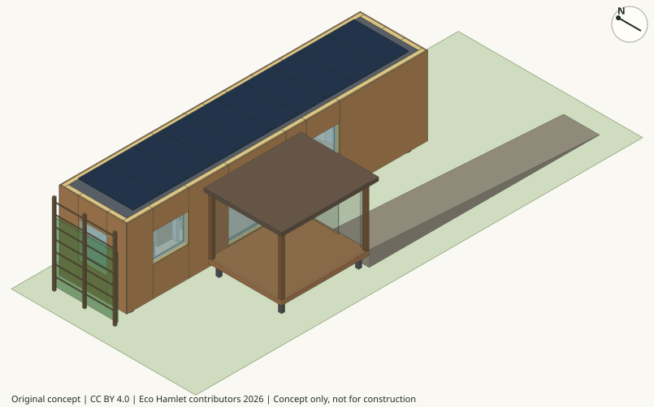
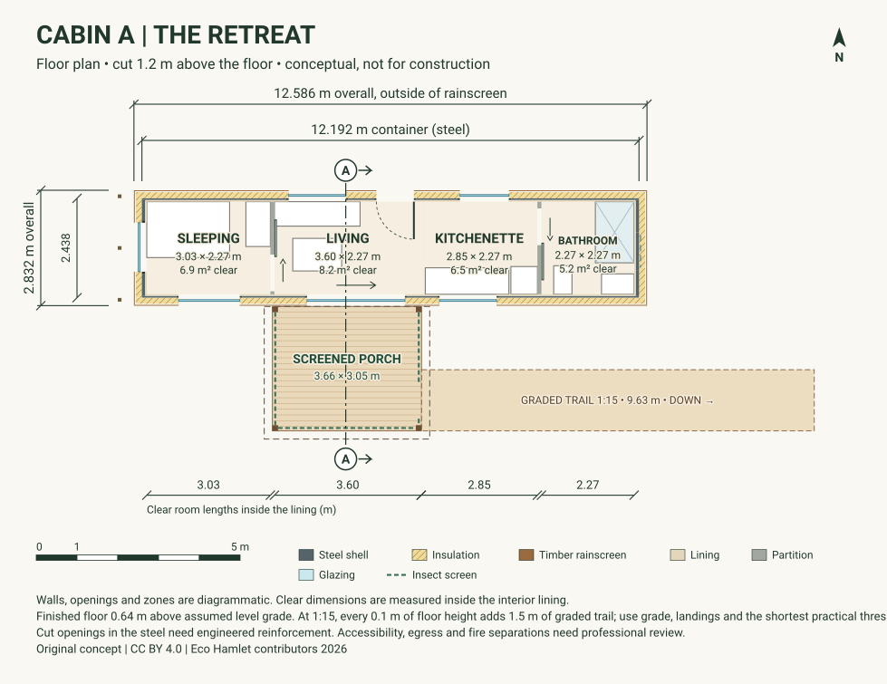

Reuse and repair
Inspect reclaimed containers, use traceable salvaged materials, and favour replaceable cladding and reversible connections.
A fictional Canadian lakeside community
Imagine small, carefully placed homes beside a lake, shared infrastructure, a protected wetland and a community land trust. Built off-site, assembled with minimal disturbance, and designed to belong to the forest.
Concept only. A vision and recruitment prototype, not an existing property, lease offer, engineering design or building permit package.
Explore the concept
The landscape
Explore six proposed homes and a common lodge. The property is invented for discussion, not a surveyed or available parcel. Everything on the map is drawn to scale in metres from one data file, and the siting checks below are recalculated whenever that file changes.
Open the site plan full size (SVG with key), to zoom in on labels.
Select a building
Select a building to explore its proposed role.
| Building | Use | To shoreline | To wetland | Ground slope | Crane reach | Ramp foot to lane | Result |
|---|---|---|---|---|---|---|---|
| Cabin A | permanent | 54.5 m | 145.0 m | 8.7% | 18.0 m | 11.3 m | Pass |
| Cabin B | permanent | 110.7 m | 86.3 m | 5.6% | 13.8 m | 14.0 m | Pass |
| Cabin C | permanent | 34.7 m | 132.3 m | 4.2% | 18.4 m | 10.1 m | Pass Moved 8.6 m east of the Phase 1 position to clear the 30 m shoreline setback. |
| Cabin D | seasonal | 143.0 m | 100.5 m | 8.8% | 23.5 m | 17.6 m | Pass |
| Cabin E | seasonal | 137.3 m | 65.4 m | 5.1% | 20.8 m | 20.9 m | Pass Moved west of the Phase 1 position to make room for the lodge beside the shared parking. |
| Cabin F | community rental | 78.1 m | 81.8 m | 3.1% | 20.4 m | 24.8 m | Pass Moved within crane reach of the south spur. |
| Common lodge | shared | 169.2 m | 48.4 m | 4.2% | 19.1 m | 7.6 m | Pass Moved beside the shared parking so the main entry ramp meets the arrival point. |
Parcel area 15 acres (6.07 ha), computed from the boundary polygon. Distances are measured from the nearest part of each building, porch, ramp or trellis.
Open architectural concepts
A single 40-foot high-cube container, with an independent screened porch. The shell, internal zones, openings and exterior insulation are generated from one parametric data file, so the plan, elevations, section, 3D model and the explorer below always agree. This is not a buildable design.



| Room | Clear size | Area | Use | Accessibility notes |
|---|---|---|---|---|
| Sleeping | 3.03 × 2.27 m | 6.9 m² | Bedroom with a double bed, wardrobe and windows to the south and west (lake side). | About 0.9 m clear beside the bed and 1.0 m at its foot. A 1.5 m turning circle does not fit with this layout: an accessible variant needs a smaller bed, a longer room or a different arrangement. |
| Living | 3.60 × 2.27 m | 8.2 m² | Main entry from the north path, sliding glass doors to the screened porch, bench seating and a table. | Step-free route from the porch ramp through the sliding door (threshold to be designed). Entry door clear width target 0.86 m or more. |
| Kitchenette | 2.85 × 2.27 m | 6.5 m² | Single counter run on the south wall with a window over the sink, refrigerator at the end of the run, open to living. | About 1.6 m clear between the counter and the north wall. Counter height, knee space and controls to be designed for seated use. |
| Bathroom | 2.27 × 2.27 m | 5.2 m² | Roll-in shower along the east wall, toilet, wall-hung vanity and a high window for privacy. | 2.27 x 2.27 m clear; a 1.5 m turning circle overlaps the curbless shower area. Grab bars, fixture clearances and controls must be checked against CSA B651 and the applicable building code. |
The downloadable OBJ file is generated from the same data as the drawings and opens in Blender or FreeCAD. It includes the envelope layers, framed openings, fixtures, porch, ramp, trellis and piles as named objects.
Interior and cutaway
Remove the roof, cut the walls, turn the model and visit each room. The view is drawn in your browser from the same data as the drawings: no WebGL, no plug-ins and nothing downloaded beyond this page.

Choose a room to highlight it and read about its size, use and accessibility.
Shared infrastructure
Two reclaimed containers act as service cores either side of a 6 m timber-framed gathering hall with clerestory windows. The north module holds the shared kitchen, pantry, laundry and a mechanical and battery room that opens only to the outside. The south module holds a workshop and tool library, a washroom, a universal washroom with an adult-size change table, and a boot room. Ramps lead to both the entry and the screened porch.


| Room | Clear size | Area | Use | Accessibility notes |
|---|---|---|---|---|
| Shared kitchen | 5.48 × 2.27 m | 12.5 m² | Community kitchen with a 4.2 m wide servery opening to the hall. | About 1.6 m clear in front of the counter. Include a lowered work section with knee space and front-mounted controls. |
| Pantry and cold storage | 1.90 × 2.27 m | 4.3 m² | Shared bulk food storage reached from the kitchen. | Reachable shelving between 0.4 m and 1.2 m for frequently used items. |
| Laundry | 1.90 × 2.27 m | 4.3 m² | Shared washer and dryer, reached from the hall. | Front-loading machines on a raised plinth; 1.5 m clear in front. |
| Mechanical and battery room | 2.37 × 2.27 m | 5.4 m² | Heat pump, water storage, PV inverter and battery storage. Exterior door only; no door to the occupied building. | Service space; not a public room. |
| Gathering hall | 11.91 × 6.00 m | 71.5 m² | Shared meals, meetings, workshops and events. Clerestory windows on both sides; glazed doors to the screened porch on the west and the main entry on the east. | Step-free from both ramps. Plan seating with wheelchair spaces dispersed, a hearing loop for meetings and good daylight without glare. |
| Workshop and tool library | 4.43 × 2.27 m | 10.1 m² | Shared tools, repair bench and bicycle maintenance. Supports the repair-first approach to the buildings. | Adjustable-height bench section; 1.2 m wide double door to the hall. |
| Washroom with shower | 1.90 × 2.27 m | 4.3 m² | Toilet, sink and shower for guests and work days. | Not designed as the accessible washroom; see the universal washroom. |
| Universal washroom | 2.35 × 2.27 m | 5.3 m² | Single-user, all-gender accessible washroom with an adult-size change table. | 2.35 x 2.27 m clear; 1.0 m door (consider a power operator). Turning space, transfer space, grab bars and the change table to be designed to CSA B651 and the applicable code. |
| Boot room | 2.97 × 2.27 m | 6.8 m² | Winter entry with bench, boot drying and a separate exterior door to the east. | Bench at 0.45 m with clear floor space beside it. |
Construction and stewardship
Inspect reclaimed containers, use traceable salvaged materials, and favour replaceable cladding and reversible connections.
Fabricate and fit out modules before delivery; plan lifting, transport and safe assembly before clearing the site.
Study continuous external insulation, moisture management and ventilated rainscreens. Consider spray foam only where justified.
Protect the wetland and shoreline. Explore native green walls and engineered living roofs without shading solar panels.
Explore permanent, seasonal and optional rental homes on leased sites, with collective stewardship of shared infrastructure.
Provide usable paths, drop-off and emergency access, accessible homes, and bug-screened outdoor gathering spaces.
Each topic below is a direction for professional design, not a specification. Full notes are in the build strategy.
Cut and reinforce openings, install the external envelope, windows, services and interior fit-out in a workshop, under engineering review. Test each module before it travels. Site work shrinks to foundations, lifting, connections and commissioning.
Each building has a crane standing point on the gravel emergency lane, checked against a placeholder reach of 24 m. Lifts never swing over the wetland or shoreline buffers. Route surveys, dimensional permits, lifting points, ground bearing under outriggers and a written lift plan come before any tree is cut.
Helical piles are shown as a placeholder. The real choice depends on soils, frost, bedrock and groundwater, and piles are not automatically appropriate near wetlands or on rock. Piles bear on the steel through the floor insulation, which creates thermal bridges to be detailed.
The steel stays inside a continuous layer of external insulation under a ventilated timber rainscreen, so the shell stays warm and dry. Air, vapour and water control, condensation on steel, thermal bridges at piles and openings, combustible cladding, and spatial separation between buildings all need review by an envelope consultant and a fire protection engineer.
Spray foam is not part of the base assembly. It may be considered for difficult junctions only after weighing blowing agents, repairability, fire protection, worker exposure and end-of-life impacts.
The default roof carries a solar array. The alternative is a biosolar roof: an extensive green roof with the panels raised above low planting so vegetation never shades them, and a gravel strip at the edges for maintenance and fire separation. A green roof is never assumed: saturated weight, snow, drainage, waterproofing, maintenance and fire must be engineered. On the lodge, the taller hall would shade the north module, so that roof gets no panels.
Climbing plants grow on free-standing trellises 350 mm from the rainscreen, on their own footings. Roots, moisture and maintenance stay off the envelope, and the planting shades west and south walls in summer.
Every home has a bug-screened outdoor room on its own timber frame and piles, 20 mm clear of the rainscreen, so it can be repaired or replaced without touching the envelope. The deck sits at floor level so the porch is also the landing at the top of the ramp.
Raised floors protect the steel from snow and ground moisture but cost ramp length: with the floor 0.64 m above grade, each entrance needs about 9.6 m of ramp at 1:15 plus landings. The model calculates this from the data, so lowering the floor or regrading a path shows its effect immediately. Ramps, thresholds and clearances must be designed to CSA B651 and the applicable code.
Provenance and reuse
A material passport records where each component comes from, what must be checked before it is reused, how it is connected and how it comes apart again. These are drafts: every documentation status is "Not started".
| Component | Material | Modelled volume | Source | Condition assessment | Connections and disassembly | End of life | Documentation |
|---|---|---|---|---|---|---|---|
| Container shell | Weathering steel, corrugated walls and roof, steel cross-members | 8.83 m³ | Reclaimed ISO container (one-trip or used) | Required before purchase: corrosion, deformation, weld repairs, CSC plate history, prior cargo, and coatings tested for hazardous substances. | Welded original structure; new openings cut and reinforced; bolted lifting and foundation connections where feasible. Module can be lifted and relocated as a unit. | Reuse as a module, otherwise steel recycling. | Not started |
| Container floor deck | Original hardwood plywood deck on steel cross-members | 8.83 m³ | Comes with the container | Original container floors are often treated with pesticides. Test, then replace or encapsulate before occupancy. | Screwed to cross-members Removable panels | Hazardous-waste route if treatment is confirmed | Not started |
| External insulation | Wood fibre board, mineral wool or documented reclaimed board (TBD) | 22.68 m³ | New or reclaimed (TBD) | Reclaimed board: verify type, blowing agent, contamination and fire classification. | Mechanically fixed through battens; no adhesives on the steel Unscrew battens and lift off boards | Reuse; wood fibre can be composted or recovered when uncontaminated | Not started |
| Rainscreen cladding and battens | Durable timber boards on timber battens | 1.86 m³ | Prefer local reclaimed or certified timber | Reclaimed boards: check for nails, lead paint and rot. | Exposed screws for replacement Board-by-board replacement | Reuse, then biomass recovery | Not started |
| Windows and doors | Triple-glazed units in timber or fibreglass frames (TBD) | 0.56 m³ | New or salvaged units of known performance | Salvaged units: verify seal integrity, labelled performance and safety glazing. | Installed in the insulation layer on brackets (outie) Units removable without cutting steel | Glass and frame separation | Not started |
| Porch, ramp and trellis | Timber frame, decking, insect screen and steel connectors | 6.87 m³ | Local timber; reclaimed where structurally graded | Grade reclaimed members for structural use. | Bolted, independent of the container Fully demountable | Reuse, then biomass recovery | Not started |
| PV modules | Crystalline silicon modules on aluminium rails | 1.03 m³ | New or tested second-life modules | Second-life modules: flash test and insulation resistance test. | Clamped to rails; no roof penetrations through the membrane where avoidable Clamp release | Module take-back or recycling | Not started |
| Component | Material | Modelled volume | Source | Condition assessment | Connections and disassembly | End of life | Documentation |
|---|---|---|---|---|---|---|---|
| Two container shells | Weathering steel, corrugated walls and roof, steel cross-members | 17.31 m³ | Reclaimed ISO containers | Required before purchase: corrosion, deformation, CSC plate history, prior cargo, coatings and floor treatment. | Large openings toward the hall need engineered steel framing and transfer beams. Modules can be lifted out once the hall roof is removed. | Reuse as modules, otherwise steel recycling. | Not started |
| Hall frame and roof | Glulam or reclaimed heavy timber, insulated timber roof and floor cassettes | 58.15 m³ | Local certified or graded reclaimed timber | Grade reclaimed members; check for preservatives and lead paint. | Bolted steel connectors for disassembly Cassettes and frames unbolt in reverse order | Reuse, then biomass recovery | Not started |
| External insulation and rainscreen | Wood fibre or mineral wool (TBD); timber rainscreen | 42.67 m³ | New or documented reclaimed | Verify type, contamination and fire classification of any reclaimed board. | Mechanically fixed through battens Board-by-board | Reuse or material recovery | Not started |
| Battery storage | Battery chemistry TBD (prefer chemistries with lower thermal runaway risk) | 1.15 m³ | New, certified system | Certified listing; installation per manufacturer and code. | Separate fire-rated room with exterior access Licensed removal | Manufacturer take-back or certified recycler | Not started |
Nothing on this site has been reviewed by a professional. These are the reviews a real project would need before construction.
| Topic | Reviewer | Status |
|---|---|---|
| Structure: cut openings, lifting points, snow, wind and seismic loads, porch and roof options | Structural engineer (P.Eng.) | Not started |
| Foundations: soils, frost, pile type and depth, wetland and shoreline proximity | Geotechnical engineer | Not started |
| Envelope: air, vapour and moisture control, condensation on steel, thermal bridges | Building envelope consultant | Not started |
| Fire: separations, cladding, spray foam (if any), PV and battery safety, wildland interface | Fire protection engineer and building official | Not started |
| Accessibility: ramp, thresholds, door clearances, bathroom and kitchen | Accessibility consultant; CSA B651 and applicable code | Not started |
| Mechanical and electrical: heating, ventilation, water, wastewater, PV | Mechanical and electrical engineers; electrical safety authority | Not started |
| Code and zoning compliance for the actual site | Architect or qualified designer; municipal building department | Not started |
| Topic | Reviewer | Status |
|---|---|---|
| Occupancy classification: a shared gathering hall may be treated as an assembly occupancy, with higher fire, egress and accessibility requirements | Architect and municipal building department | Not started |
| Structure: large openings in the modules, hall frame, snow drift at roof steps, lifting | Structural engineer (P.Eng.) | Not started |
| Fire: separations, battery room, egress, firefighting access and water supply | Fire protection engineer and fire department | Not started |
| Accessibility: ramps, entrances, universal washroom, kitchen, assembly seating | Accessibility consultant; CSA B651 and applicable code | Not started |
| Water, wastewater and food handling for shared meals | Public health unit and wastewater approvals authority | Not started |
Open resources
These original conceptual assets are reusable under CC BY 4.0; website software is MIT licensed. Files are editable but not engineered drawings. To change a design, edit the JSON source and run node tools/build.mjs: every drawing, model and table on this page is regenerated from it.
Disclaimer: Concept only. No real site, approved zoning, structural analysis, energy modelling, code review or ground lease is provided.